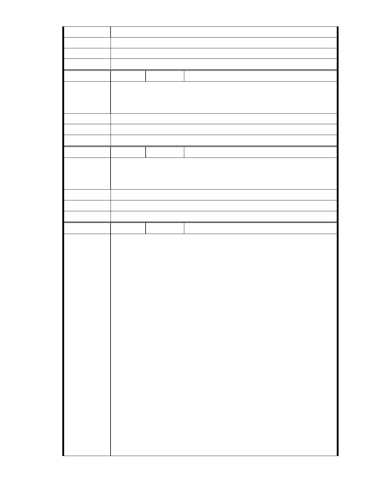

建議辦法
市 府 說 明 相關陳情意見將納入本案審查人民意見，依法定程序辦理。
委 員 會 決 議 同編號 1。
編號
陳情理由
67 陳情人 市長信箱（ MA201012020121 ）
作為內湖科學園區上班族的一分子，我竭誠歡迎此園區的成立只要是興
建的計劃及將來實際施工的情形符合環保規範，沒有破壞生態環境。內
湖需要更有人文，更有文化的建設。
建議辦法
市 府 說 明 相關陳情意見將納入本案審查人民意見，依法定程序辦理。
委 員 會 決 議 同編號 1。
編
號 68
陳情人 市長信箱（ MA201012020181 ）
台北市的學生很多都到內湖環保教育站體驗過環保，受益良多，他們改
陳 情 理 由 建一定對台北有更大的幫助，請讓他們的提案通過，這是台北市很多做
媽媽的心聲，請重視！
建議辦法
市 府 說 明 相關陳情意見將納入本案審查人民意見，依法定程序辦理。
委 員 會 決 議 同編號 1。
編
號 69
陳情人 市長信箱（ MA201012030044 ）
TO : 郝龍斌市長
陳情案名：
「變更台北市內湖區成功路 5 段大湖公園北側部份保護區及道路用地為
社會福利特定專用區主要計劃案」及「擬定台北市內湖區成功路 5 段大
湖公園北側社會福利特定專用區細部計劃案」
事實：
民國 94 年 6 月 17 日(星期五)參與本案現場會勘的都市計畫委員有： 黃
委員兼召集人武達、陳委員武正、黃呂委員錦茹、蔡委員淑瑩、蘇委員
瑛敏等五人。民國 94 年 8 月 25 日(星期四)參與專案小組會勘（水土保
陳情理由
持部分）的專家委員有：陳教授宏宇、廖委員洪鈞等二人。經查現任台
北市都市計畫委員僅有陳委員武正一人曾親臨現場會勘，其餘的都市計
畫委員均未親至本案基地現場會勘。
理由：
一、影響重大
本案涉及行水區之溝谷環境敏感地區的山坡地保護區變更事宜，將對台
北市保護區變更帶頭作用，請委員實有現場會勘實地體驗之必要。
二、張委員樞
本案變更涉及議題敏感（詳 951204 第七次專案小組審查會議紀錄）
三、林委員建元
未來相關宗教、社福團體一定會比照辦理（詳 960614 第一次討論會議紀
錄）
- 63 -